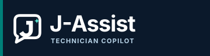

Datto remote assistance
Choose an authorized Datto tab to begin.
Not connected to Jason. Automatic sending is unavailable in this build.
Advanced · local preview and manual sharing
Full-tab screenshots can expose sensitive client data. Avoid passwords, patient records and restricted information. Nothing is sent automatically.
No screenshot prepared
Stopped
No captured frame
Manual alternative: capture, review, copy, then paste into an approved AOT ChatGPT conversation. The image remains in the system clipboard until replaced.